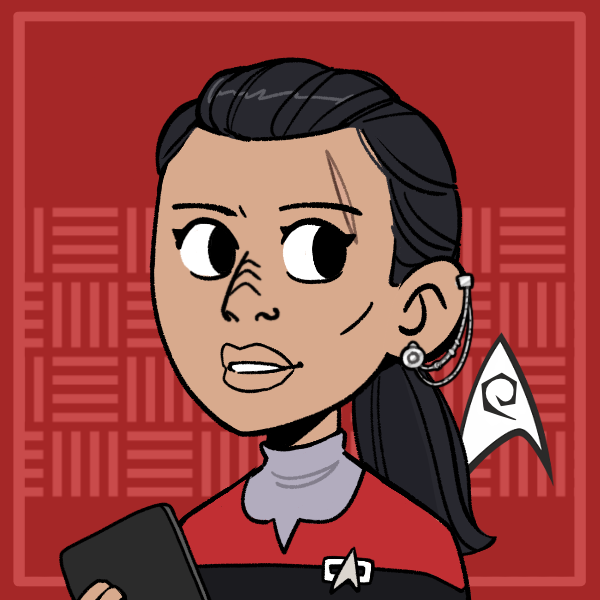
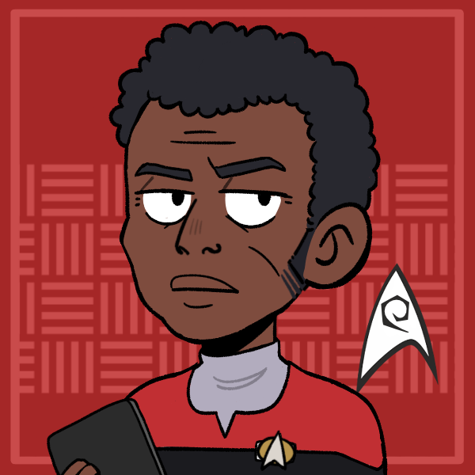
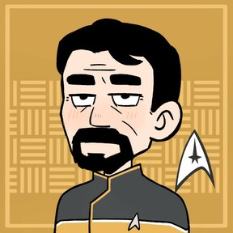
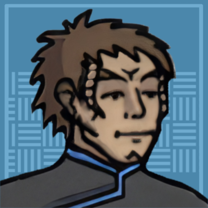
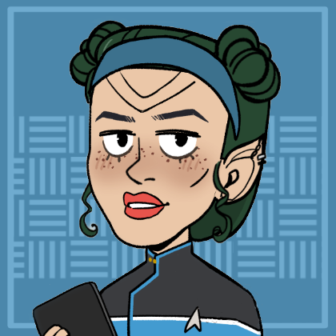
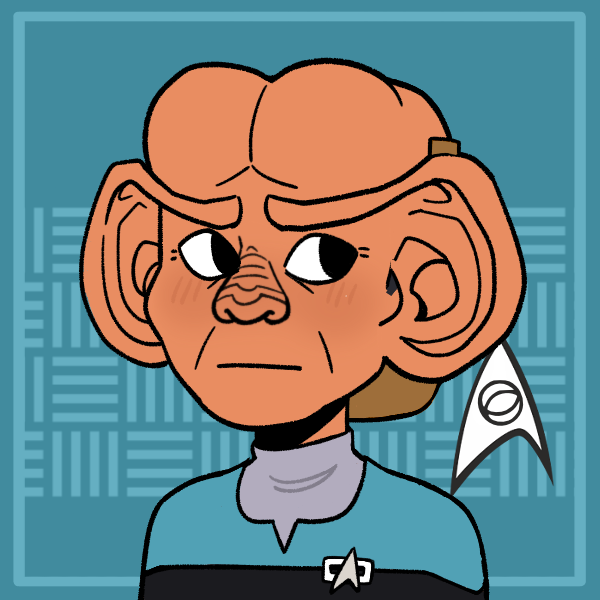
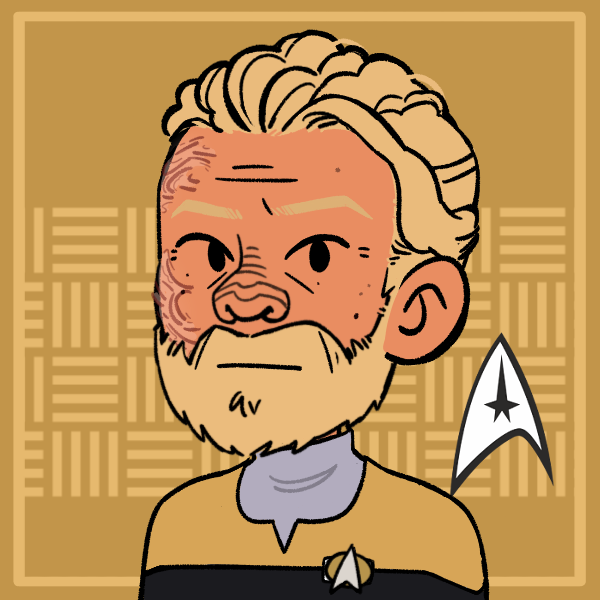
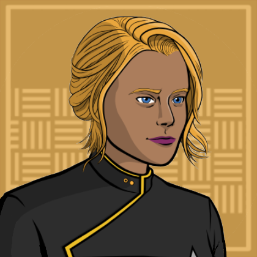

USS Alexandria
Location:: Romulan Star Empire, The Shackleton Expanse
Type:: Ship
Portrait:: 
The NCC-65337-B: An exploration vessel assigned to the Romulan Star Empire in the Beta Quadrant.
Description
A Federation New Orleans starship commanded by Kala Cerjaso. The Alexandria is outfitted for scout missions and pathfinding. It pushes into the edges of Federation space, makes first contact with new civilizations, and reports on astral phenomena. The crew is trained for a wide variety of circumstances, from diplomatic missions to emergency response.
Traits
- Federation Ship
- New Orleans Class
- Hope Ship
- Intelligence Division
Namesake
The USS Alexandria is the 2nd ship of its name. The original Alexandria was a vessel focused on making second contact. In particular, it was instrumental in maintaining an ongoing relationship with the Arcadians, who later became Federation council members.
The current NCC-65337-B Alexandria was commissioned in 2373 and was assigned to explore Romulan space after a gaining favor with Romulans for it's attempts to evacuate Romulus before the Supernova
Mission
Most recently, the Alexandria was posted in the Romulan Star Empire after recent treaties granted passage to the Federation in the region. Although it is primarily an exploration vessel, a portion of the crew was assigned by Starfleet Intelligence as a counter measure to potential Romulan aggression. Among these crew members is first officer Avery Helsing, who was assigned without the captain's approval.
Mission Logs:
- Imminent Collision:
Stardate -, Session: -
- - Abyss Station:
Stardate -, Session: -
- - Convoy SE-119:
Stardate -, Session: -
-
Crew Members
Department Heads
| Role4 | Rank + " " + file.link + "" | " (" + pronouns + ") - " + Species | "" + Type + "" | Portrait | " > " + Note |
|---|---|---|---|---|---|
| Commanding Officer | Captain Kala Cerjaso | (She / Her) - Bajoran | Supporting Character |  | On her first assignment as captain and in over her head. |
| XO, Chief of Security | Commander Avery Helsing | (he/him) - Human | Non-Player Character |  | No nonsense commander with strong ties to Starfleet Intelligence |
| Chief Engineer | Lt. Commander Relja Zecevic | (he/him) - Human | Player Character |  | A pragmatic, no-fuss engineer who takes the initiative. |
| Science Officer | Lieutenant Commander Tropp | (he/him) - Denobulan | Player Character |  | - |
Command Division
| Role3 | Rank + " " + file.link + "" | "(" + pronouns + ") - " + Species | "" + Type + "" | Portrait | "> " + Note |
|---|---|---|---|---|---|
| Commanding Officer | Captain Kala Cerjaso | (She / Her) - Bajoran | Supporting Character | On her first assignment as captain and in over her head. | |
| XO, Chief of Security | Commander Avery Helsing | (he/him) - Human | Non-Player Character | No nonsense commander with strong ties to Starfleet Intelligence | |
| Intelligence Officer | Lt. Commander Andy Markham | (he/him) - Human | Player Character | Recruited by Starfleet Intelligence and trusted by the captain |
Sciences Division
| Role4 | Rank + " " + file.link + "" | "(" + pronouns + ") - " + Species | "" + Type + "" | Portrait | "> " + Note |
|---|---|---|---|---|---|
| Science Officer | Lieutenant Commander Tropp | (he/him) - Denobulan | Player Character | - | |
| Ship's Counsellor | Lt. Commander Ceth | ((they/them)) - Romulan | Player Character |  | Searching for a way to distance themselves from Romulan culture by joining Starfleet. |
| Ship Councillor | Lieutenant Plek | (he/him) - Ferengi | Supporting Character |  | Helps others find profit in their own wellbeing. |
| Nurse | Lieutenant Alora | (She / Her) - Liberated Borg | Non-Player Character |  | Ex-Borg looking for a lost sense of connection |
Operations Division
| Role6 | Rank + " " + file.link + "" | "(" + pronouns + ") - " + Species | "" + Type + "" | Portrait | "> " + Note |
|---|---|---|---|---|---|
| Chief Engineer | Lt. Commander Relja Zecevic | (he/him) - Human | Player Character | A pragmatic, no-fuss engineer who takes the initiative. | |
| Engineering Specialist | Lt. Commander Braag lorin Pag | (he/him) - Tellarite | Supporting Character |  | Previously covered Walter Beck's mistake before it went bad |
| Security Assistant | Lieutenant Bridget | (she/her) - Human | Supporting Character |  | - |
| Operations Manager | Lieutenant JG Eelara | (she/her) - Denobulan | Player Character | A friendly face seeking wellbeing amongst the stars. | |
| Communications Officer | Lieutenant JG Durall | (he/him) - Trill | Non-Player Character |  | Got Eelara's preferred role on the ship. |
| Security Specialist | Petty Officer Third Class Walter Beck | (he / him) - Human | Player Character | A battle hardened medic who gets the job done. |
Passengers
| Role2 | Rank + " " + file.link + "" | "(" + pronouns + ") - " + Species | "" + Type + "" | Portrait | "> " + Note |
|---|---|---|---|---|---|
| Anthropology Expert | N/A T'Mel Marie Williamson | (She/her) - Human-Vulcan | Supporting Character |  | Xeno-Anthropologist who prefers caution over daring decision making. |
| Passenger | Civilian Hemel Jiqari | (She/her) - Bajoran-Cardassian | SC |  | Bonded with Andy Markham over having a difficulty relationship with their parents. |
Ship Locations
| File0 | "> " + Note2 |
|---|
Shuttles
The Alexandria is equipped with dozens of shuttles. Some notable ones are listed below!
| File0 | "> " + Note2 |
|---|